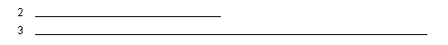

Feedback Form
| Start of Tutorial > Start of Trail > Start of Lesson | Search Feedback Form |
Previously, this lesson claimed that threads run concurrently. While conceptually this is true, in practice it usually isn't. Most computer configurations have a single CPU, so threads actually run one at a time in such a way as to provide an illusion of concurrency. Execution of multiple threads on a single CPU, in some order, is called scheduling. The Java runtime supports a very simple, deterministic scheduling algorithm known as fixed priority scheduling. This algorithm schedules threads based on their priority relative to other runnable threads.When a Java thread is created, it inherits its priority from the thread that created it. You can also modify a thread's priority at any time after its creation using the
setPrioritymethod. Thread priorities are integers ranging betweenMIN_PRIORITYandMAX_PRIORITY(constants defined in theThreadclass). The higher the integer, the higher the priority. At any given time, when multiple threads are ready to be executed, the runtime system chooses the runnable thread with the highest priority for execution. Only when that thread stops, yields, or becomes not runnable for some reason will a lower priority thread start executing. If two threads of the same priority are waiting for the CPU, the scheduler chooses one of them to run in a round-robin fashion. The chosen thread will run until one of the following conditions is true:Then the second thread is given a chance to run, and so on, until the interpreter exits.
- A higher priority thread becomes runnable.
- It yields, or its
runmethod exits.- On systems that support time-slicing, its time allotment has expired.
The Java runtime system's thread scheduling algorithm is also preemptive. If at any time a thread with a higher priority than all other runnable threads becomes runnable, the runtime system chooses the new higher priority thread for execution. The new higher priority thread is said to preempt the other threads.
Rule of thumb: At any given time, the highest priority thread is running. However, this is not guaranteed. The thread scheduler may choose to run a lower priority thread to avoid starvation. For this reason, use priority only to affect scheduling policy for efficiency purposes. Do not rely on thread priority for algorithm correctness.
RaceAppletis an applet that animates a race between two "runner" threads with different priorities. When you click the mouse down over the applet, it starts the two runners. The top runner, labelled "2", has a priority of 2. The second runner, labelled "3", has a priority of 3.
Try this: Click the applet below to start the race.

This is a picture of the applet's GUI. To run the applet, click the picture. The applet will appear in a new browser window.This is the
runmethod for bothrunnersThispublic int tick = 1; public void run() { while (tick < 10000000) tick++; }runmethod simply counts from 1 to 10,000,000. The instance variabletickis public because the applet uses this value to determine how far the runner has progressed (how long its line is).In addition to the two runner threads, this applet also has a third thread that handles the drawing. The drawing thread's
runmethod contains an infinite loop; during each iteration of the loop it draws a line for each runner (whose length is computed from the runner'stickvariable), and then sleeps for 3 milliseconds. The drawing thread has a thread priority of 4--higher than either runner. So, whenever the drawing thread wakes up after 3 milliseconds, it becomes the highest priority thread, preempting whichever runner is currently running, and draws the lines. You can see the lines inch their way across the pageThis is not a fair race because one runner has a higher priority than the other. Each time the drawing thread yields the CPU by going to sleep for 3 milliseconds, the scheduler chooses the highest priority runnable thread to run; in this case, it's always the runner with a priority of 3. Here is another version of the applet that implements a fair race, that is, both of the runners have the same priority and they have an equal chance of being chosen to run.
Try this: Click the mouse to start the race.
In this race, each time the drawing thread yields the CPU by going to sleep, there are two runnable threads of equal priority--the runners--waiting for the CPU; the scheduler must choose one of the threads to run. In this situation, the scheduler chooses the next thread to run in a round-robin fashion.
This is a picture of the applet's GUI. To run the applet, click the picture. The applet will appear in a new browser window.
TheRunnerclass used in the races above actually implements "socially-impaired" thread behavior. Recall therunmethod from the Runner class used in the races above:Thepublic int tick = 1; public void run() { while (tick < 10000000) tick++; }whileloop in therunmethod is in a tight loop. Once the scheduler chooses a thread with this thread body for execution, the thread never voluntarily relinquishes control of the CPU--the thread continues to run until thewhileloop terminates naturally or until the thread is preempted by a higher priority thread. This thread is called a selfish thread.In some situations, having selfish threads doesn't cause any problems because a higher priority thread preempts the selfish one (just as the drawing thread in the RaceApplet preempts the selfish runners). However, in other situations, threads with CPU-greedy
runmethods, such as theRunnerclass, can take over the CPU and cause other threads to wait for a long time before getting a chance to run.
Some systems, such as Windows 95/NT, fight selfish thread behavior with a strategy known as time-slicing. Time-slicing comes into play when there are multiple "Runnable" threads of equal priority and those threads are the highest priority threads competing for the CPU. For example, thisstand-alone Java programselfish threadsrunmethod.Thispublic void run() { while (tick < 400000) { tick++; if ((tick % 50000) == 0) System.out.println("Thread #" + num + ", tick = " + tick); } }runcontains a tight loop that increments the integertickand every 50,000 ticks prints out the thread's identifier and itstickcount.When running this program on a time-sliced system, you will see messages from both threads intermingled with one another. Like this:
This output is produced because a time-sliced system divides the CPU into time slots and iteratively gives each of the equal-and-highest priority threads a time slot in which to run. The time-sliced system iterates through the equal-and-highest priority threads, allowing each one a bit of time to run, until one or more of them finishes or until a higher priority thread preempts them. Notice that time-slicing makes no guarantees as to how often or in what order threads are scheduled to run.Thread #1, tick = 50000 Thread #0, tick = 50000 Thread #0, tick = 100000 Thread #1, tick = 100000 Thread #1, tick = 150000 Thread #1, tick = 200000 Thread #0, tick = 150000 Thread #0, tick = 200000 Thread #1, tick = 250000 Thread #0, tick = 250000 Thread #0, tick = 300000 Thread #1, tick = 300000 Thread #1, tick = 350000 Thread #0, tick = 350000 Thread #0, tick = 400000 Thread #1, tick = 400000When running this program on a non-time-sliced system, however, you will see messages from one thread finish printing before the other thread ever gets a chance to print one message. Like this:
This is because a non-time-sliced system chooses one of the equal-and-highest priority threads to run and allows that thread to run until it relinquishes the CPU (by sleeping, yielding, finishing its job) or until a higher priority preempts it.Thread #0, tick = 50000 Thread #0, tick = 100000 Thread #0, tick = 150000 Thread #0, tick = 200000 Thread #0, tick = 250000 Thread #0, tick = 300000 Thread #0, tick = 350000 Thread #0, tick = 400000 Thread #1, tick = 50000 Thread #1, tick = 100000 Thread #1, tick = 150000 Thread #1, tick = 200000 Thread #1, tick = 250000 Thread #1, tick = 300000 Thread #1, tick = 350000 Thread #1, tick = 400000
Note: The Java runtime does not implement (and therefore does not guarantee) time-slicing. However, some systems on which you can run Java do support time-slicing. Your Java programs should not rely on time-slicing as it may produce different results on different systems.
Try this: Compile and run theRaceTestSelfishRunner
As you can imagine, writing CPU-intensive code can have negative repercussions on other threads running in the same process. In general, you should try to write "well-behaved" threads that voluntarily relinquish the CPU periodically and give other threads an opportunity to run. In particular, you should never write Java code that relies on time-sharing--this will practically guarantee that your program will give different results on different computer systems.
A thread can voluntarily yield the CPU without going to sleep or some other drastic means by calling the
yieldmethod. Theyieldmethod gives other threads of the same priority a chance to run. If there are no equal priority threads that are runnable, then the yield is ignored.
Try this: Rewrite the SelfishRunner class to be aPoliteRunneryieldmethod from therunmethod. Be sure to modify themain programPoliteRunners instead ofSelfishRunners. Compile and run the new classes on your computer. Now isn't that better?
MIN_PRIORITY and MAX_PRIORITY (constants defined in
the Thread class). At any given time, when multiple threads are
ready to be executed, the thread with the highest priority is chosen for
execution. Only when that thread stops, or is suspended for some reason, will
a lower priority thread start executing.
yield method. Threads can only yield the CPU to
other threads of the same priority--attempts to yield to a lower priority
thread are ignored.
| Start of Tutorial > Start of Trail > Start of Lesson | Search Feedback Form |